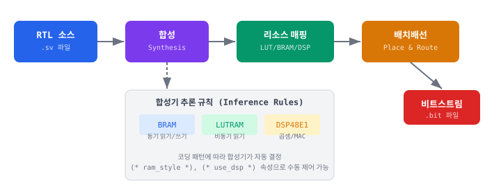

B.1 합성 가능/불가 구문 분류표
SystemVerilog IEEE 1800-2017 표준의 구문 중 Vivado 2024.x에서 합성 가능한 것과 시뮬레이션 전용인 것을 분류한다. RTL 코드 작성 시 이 표를 참고하여 합성 불가 구문을 실수로 사용하지 않도록 한다.
| 구문 | 합성 | 비고 |
|---|---|---|
| 합성 가능 구문 | ||
always_ff @(posedge clk) |
O | 순차 논리(플립플롭) 추론. 클록 에지 필수. |
always_comb |
O | 조합 논리 추론. 불완전 분기 시 래치 경고. |
assign |
O | 연속 할당. 조합 논리. |
logic / wire |
O | logic은 reg와 wire를 통합. SystemVerilog 권장. |
parameter / localparam |
O | 정적 상수. 제네릭 설계에 필수. |
generate / genvar |
O | 반복 구조 생성. 정적으로 확장됨. |
if-else / case / casez |
O | MUX 또는 우선순위 인코더 추론. casex는 권장하지 않음. |
산술 연산자 (+, -, *) |
O | 가산기/감산기/곱셈기 추론. *는 DSP48E1 추론 가능. |
논리/비트 연산자 (&, |, ^, ~) |
O | LUT로 직접 매핑. |
시프트 연산자 (<<, >>, >>>) |
O | 배럴 시프터 추론. >>>는 산술 시프트(부호 확장). |
비교 연산자 (==, !=, <, >) |
O | 비교기 추론. |
typedef enum |
O | FSM 상태 정의에 권장. 자동 인코딩. |
typedef struct packed |
O | 파이프라인 레지스터 번들에 유용. packed 필수. |
삼항 연산자 (? :) |
O | 2:1 MUX 추론. |
module / endmodule |
O | 계층 구조 정의. |
| 조건부 합성 (사용 맥락에 따라) | ||
initial |
△ | BRAM/ROM 초기화에만 합성 가능. 일반 로직에서는 시뮬레이션 전용. |
$clog2() |
△ | parameter/localparam 계산에서만 합성 가능. 런타임 사용 불가. |
for 루프 |
△ | 정적 언롤(unroll) 가능한 경우만 합성. 루프 범위가 상수여야 함. |
function |
△ | 조합 논리 함수만 합성 가능. 시간 지연(#) 포함 불가. |
interface |
△ | Vivado에서 부분 지원. modport 사용 시 주의 필요. |
나눗셈 (/, %) |
△ | 2의 거듭제곱 나눗셈은 시프트로 합성. 일반 나눗셈은 매우 큰 면적. |
| 합성 불가 (시뮬레이션 전용) | ||
$display / $monitor / $write |
X | 콘솔 출력. 테스트벤치 전용. |
$readmemh / $readmemb |
▵ | Vivado는 BRAM/LUTRAM 초기화용으로 합성 지원한다. 단, 시뮬레이션 전용 사용(파일 I/O)과 구분 필요. |
#delay |
X | 시간 지연. 합성기가 무시함. |
fork / join |
X | 병렬 프로세스. 시뮬레이션 전용. |
class / program |
X | 객체지향 구문. UVM 검증 전용. |
real / string |
X | 부동소수점/문자열 타입. 하드웨어 표현 불가. |
assert / assume / cover |
X | 검증 구문. 합성기가 무시(경고 발생). |
@(negedge clk) (하강 에지) |
▵ | Vivado는 하강 에지 플립플롭을 합성 지원한다. DDR 인터페이스, 위상 조정 등에 사용되지만, 단일 에지 설계가 권장됨. |
B.2 Vivado 하드웨어 추론 규칙
Vivado 합성기는 RTL 코드의 패턴을 분석하여 FPGA 전용 리소스(BRAM, LUTRAM, DSP48E1, SRL)로 자동 매핑한다. 아래 그림은 전체 합성 흐름을 보여준다.

B.2.1 Block RAM (BRAM) 추론 조건
| 조건 | 설명 |
|---|---|
| 읽기 방식 | 동기 읽기 필수 (always_ff 내에서 읽기) |
| 쓰기 방식 | 동기 쓰기 (always_ff 내에서 쓰기) |
| 최소 크기 | 일반적으로 256비트 이상 (Vivado가 자동 판단) |
| 최대 크기 | Artix-7: 36Kb/블록, 50개 블록 = 1,800Kb |
| 포트 구성 | Single Port / Simple Dual Port / True Dual Port |
| 초기화 | initial 블록 또는 COE 파일 |
| Vivado 힌트 | (* ram_style = "block" *) |
| 본 교재 사용 | IMEM (Ch05), DMEM (Ch05), I-Cache Data (Ch13) |
BRAM 추론 코드 패턴:
// BRAM 추론: 동기 읽기 + 동기 쓰기
logic [31:0] mem [0:1023];
always_ff @(posedge clk) begin
if (we)
mem[addr] <= din;
dout <= mem[addr]; // 동기 읽기 → BRAM 추론
end
B.2.2 LUTRAM (분산 RAM) 추론 조건
| 조건 | 설명 |
|---|---|
| 읽기 방식 | 비동기 읽기 (assign 또는 always_comb) |
| 쓰기 방식 | 동기 쓰기 (always_ff) |
| 리소스 비용 | LUT 소비 큼 — 소규모 메모리에만 권장 |
| Vivado 힌트 | (* ram_style = "distributed" *) |
| 본 교재 사용 | 레지스터 파일 (Ch04), I-Cache Tag (Ch13), D-Cache Data (Ch14) |
LUTRAM 추론 코드 패턴:
// LUTRAM 추론: 비동기 읽기 + 동기 쓰기
(* ram_style = "distributed" *)
logic [31:0] mem [0:31];
always_ff @(posedge clk) begin
if (we) mem[waddr] <= din;
end
assign dout = mem[raddr]; // 비동기 읽기 → LUTRAM 추론
B.2.3 DSP48E1 추론 조건
| 조건 | 설명 |
|---|---|
| 곱셈 | * 연산자 사용 (25x18 이내에서 1개 DSP) |
| MAC | acc <= acc + a * b 패턴 |
| 파이프라인 | 입력/출력 레지스터 추가 시 DSP 내부 레지스터 매핑 |
| Artix-7 | DSP48E1 90개 (XC7A35T) |
| Vivado 힌트 | (* use_dsp = "yes" *) |
| 본 교재 사용 | M 확장 곱셈기 (Ch24) |
B.2.4 SRL (Shift Register LUT) 추론 조건
| 조건 | 설명 |
|---|---|
| 패턴 | 고정 깊이 시프트 레지스터 (체인 연결) |
| 깊이 | SRL16E: 1~16단, SRLC32E: 1~32단 |
| 리셋 | 리셋 신호가 없어야 SRL 추론 (리셋 있으면 FF 사용) |
| 용도 | 파이프라인 지연 매칭, 소규모 FIFO |
B.3 합성 관련 Pragma 및 속성
Vivado 합성기의 자동 추론 결과가 의도와 다를 때, 속성(attribute)을 사용하여 추론을 수동으로 제어할 수 있다.
| 속성 | 적용 대상 | 값 | 효과 |
|---|---|---|---|
(* ram_style *) |
메모리 배열 | "block" / "distributed" / "registers" |
BRAM / LUTRAM / FF 강제 선택 |
(* rom_style *) |
ROM 배열 | "block" / "distributed" |
ROM 구현 방식 선택 |
(* use_dsp *) |
곱셈/가산 | "yes" / "no" |
DSP48E1 사용 강제/금지 |
(* keep *) |
신호/레지스터 | "true" |
최적화(제거/병합) 방지 |
(* dont_touch *) |
모듈/신호 | "true" |
계층 간 최적화 완전 방지 |
(* max_fanout *) |
신호 | 정수 (예: 32) |
팬아웃 제한 (버퍼 자동 삽입) |
(* async_reg *) |
레지스터 | "true" |
CDC 동기화기 표시 (메타스태빌리티 최적화) |
(* fsm_encoding *) |
FSM 상태 변수 | "one_hot" / "sequential" / "auto" |
FSM 인코딩 방식 지정 |
(* full_case *) |
case 문 | — | 모든 경우가 커버됨을 선언 (래치 방지) |
(* parallel_case *) |
case 문 | — | 우선순위 없는 병렬 비교 선언 |
B.4 XDC 타이밍 제약 템플릿
다음은 Basys 3 (XC7A35T, 100MHz 오실레이터) 프로젝트에 바로 적용할 수 있는 XDC 템플릿이다. 본 교재 프로젝트는 100MHz 입력을 PLL로 50MHz로 분주하여 사용한다.
## ============================================================
## Basys 3 타이밍 제약 템플릿 (XDC)
## 대상: XC7A35TCPG236-1, 100MHz 오실레이터
## ============================================================
## --- 1. 기본 클록 제약 ---
## Basys 3 온보드 100MHz 오실레이터 (핀 W5)
create_clock -period 10.000 -name sys_clk_100 [get_ports clk_100mhz]
## PLL 출력 클록 (50MHz 시스템 클록)
## Vivado가 PLL/MMCM 출력 클록을 자동 생성하지만, 명시적 선언 권장
# create_generated_clock -name sys_clk_50 \
# -source [get_pins clk_gen/mmcm_inst/CLKIN1] \
# -divide_by 2 [get_pins clk_gen/mmcm_inst/CLKOUT0]
## --- 2. I/O 타이밍 제약 ---
## 입력 지연: 외부 디바이스 → FPGA 핀 도착 시간
set_input_delay -clock sys_clk_100 -max 3.0 [get_ports {sw[*]}]
set_input_delay -clock sys_clk_100 -min 1.0 [get_ports {sw[*]}]
set_input_delay -clock sys_clk_100 -max 3.0 [get_ports {btn*}]
## 출력 지연: FPGA 핀 → 외부 디바이스 셋업/홀드
set_output_delay -clock sys_clk_100 -max 2.0 [get_ports {led[*]}]
set_output_delay -clock sys_clk_100 -min 0.5 [get_ports {led[*]}]
## --- 3. 거짓 경로 (False Path) ---
## 비동기 리셋은 타이밍 분석에서 제외
set_false_path -from [get_ports rst_n]
## CDC (Clock Domain Crossing) 경로
# set_false_path -from [get_clocks clk_a] -to [get_clocks clk_b]
## --- 4. 멀티사이클 경로 (해당 시 사용) ---
## 예: 2사이클 곱셈기 출력
# set_multicycle_path 2 -setup -from [get_pins mult_reg/Q] -to [get_pins product/D]
# set_multicycle_path 1 -hold -from [get_pins mult_reg/Q] -to [get_pins product/D]
## --- 5. 최대 지연 (특수 경로) ---
## 예: UART TX 출력 최대 지연
# set_max_delay 8.0 -from [get_pins uart_tx_reg/Q] -to [get_ports uart_txd]
| XDC 명령어 | 용도 | 예시 |
|---|---|---|
create_clock |
기본 클록 정의 | -period 10.0 (= 100MHz) |
create_generated_clock |
파생 클록 정의 (PLL 출력) | -divide_by 2 (50MHz) |
set_input_delay |
입력 핀 타이밍 | -max 3.0 (최대 도착 시간) |
set_output_delay |
출력 핀 타이밍 | -max 2.0 (외부 셋업 요구) |
set_false_path |
타이밍 분석 제외 | 리셋, CDC 경로 |
set_multicycle_path |
다중 사이클 경로 | 곱셈기 2사이클 |
set_max_delay |
최대 지연 제한 | 특수 비동기 경로 |
B.5 흔한 합성 경고/오류와 해결법
Vivado 합성 시 자주 만나는 경고(Warning)와 오류(Error) 메시지 Top 10을 정리한다. 메시지를 만났을 때 이 표를 참조하여 원인을 빠르게 파악할 수 있다.
| 메시지 (요약) | 심각도 | 원인 | 해결법 |
|---|---|---|---|
| "Inferring latch for signal..." | Warning | always_comb/always @*에서 불완전 분기 |
case에 default 추가, 모든 분기에서 모든 출력 할당 |
| "Multi-driven net..." | Error | 하나의 신호가 여러 always 블록에서 구동됨 |
하나의 always 블록에서만 할당하거나, MUX로 선택 |
| "Timing constraint not met (WNS < 0)" | Error | 임계 경로가 클록 주기를 초과 | 파이프라인 레지스터 삽입, 클록 주파수 하향, 로직 최적화 |
| "Signal is read but never assigned" | Warning | 미연결 입력 또는 선언만 한 신호 | 포트 연결 확인, 미사용 신호 제거 |
| "ROM will be implemented using Block RAM" | Info | 큰 ROM이 BRAM으로 추론됨 | 의도된 경우 정상. LUTRAM 원하면 (* rom_style = "distributed" *) |
| "Found N-bit register for signal..." | Info | 합성기가 레지스터를 추론함 | 정상 메시지. 비트 폭이 예상과 다르면 코드 확인 |
| "Width mismatch..." | Warning | 포트 연결 시 비트 폭 불일치 | 명시적 비트 슬라이싱 또는 파라미터 수정 |
| "Unused sequential element removed" | Warning | 출력이 아무 곳에도 연결되지 않은 레지스터 | 의도적이면 무시. 디버깅용이면 (* keep = "true" *) |
| "Combinational loop detected" | Error | 조합 논리에 피드백 루프 존재 | 레지스터를 삽입하여 루프 끊기. always_comb 내부 점검 |
| "DSP48E1 output overflow" | Warning | 곱셈 결과 비트 폭이 DSP 출력(48비트)을 초과 | 결과 비트 폭을 48비트 이내로 제한 또는 분할 곱셈 |
전체 소스 코드
이 부록에서 소개한 추론 패턴의 완전한 소스 코드이다. 각 파일은 독립적으로 합성 가능하며, Vivado에서 추론 결과를 직접 확인할 수 있다.
SVapp_b_bram_pattern.sv
// BRAM 추론 패턴 — 동기 읽기 + 동기 쓰기
module bram_single_port #(
parameter ADDR_WIDTH = 10,
parameter DATA_WIDTH = 32
)(
input logic clk,
input logic we,
input logic [ADDR_WIDTH-1:0] addr,
input logic [DATA_WIDTH-1:0] din,
output logic [DATA_WIDTH-1:0] dout
);
logic [DATA_WIDTH-1:0] mem [0:2**ADDR_WIDTH-1];
always_ff @(posedge clk) begin
if (we)
mem[addr] <= din;
dout <= mem[addr];
end
endmodule
SVapp_b_lutram_pattern.sv
// LUTRAM 추론 패턴 — 비동기 읽기 + 동기 쓰기
module lutram_async_read #(
parameter ADDR_WIDTH = 5,
parameter DATA_WIDTH = 32
)(
input logic clk,
input logic we,
input logic [ADDR_WIDTH-1:0] waddr,
input logic [ADDR_WIDTH-1:0] raddr,
input logic [DATA_WIDTH-1:0] din,
output logic [DATA_WIDTH-1:0] dout
);
(* ram_style = "distributed" *)
logic [DATA_WIDTH-1:0] mem [0:2**ADDR_WIDTH-1];
always_ff @(posedge clk) begin
if (we) mem[waddr] <= din;
end
assign dout = mem[raddr];
endmodule
SVapp_b_dsp_pattern.sv
// DSP48E1 추론 패턴 — 파이프라인 곱셈기
// 주의: DSP48E1은 비동기 리셋을 지원하지 않으므로 동기 리셋 사용
module dsp_multiplier (
input logic clk,
input logic rst, // 동기 리셋
input logic [15:0] a,
input logic [15:0] b,
output logic [31:0] product
);
logic [15:0] a_reg, b_reg;
logic [31:0] mult_reg;
always_ff @(posedge clk) begin
if (rst) begin
a_reg <= '0; b_reg <= '0;
mult_reg <= '0; product <= '0;
end else begin
a_reg <= a; b_reg <= b;
mult_reg <= a_reg * b_reg;
product <= mult_reg;
end
end
endmodule
SVapp_b_srl_pattern.sv
// SRL 추론 패턴 — 시프트 레지스터 (리셋 없음)
module srl_delay #(
parameter DEPTH = 16,
parameter WIDTH = 8
)(
input logic clk,
input logic ce,
input logic [WIDTH-1:0] din,
output logic [WIDTH-1:0] dout
);
logic [WIDTH-1:0] shreg [0:DEPTH-1];
always_ff @(posedge clk) begin
if (ce) begin
shreg[0] <= din;
for (int i = 1; i < DEPTH; i++)
shreg[i] <= shreg[i-1];
end
end
assign dout = shreg[DEPTH-1];
endmodule